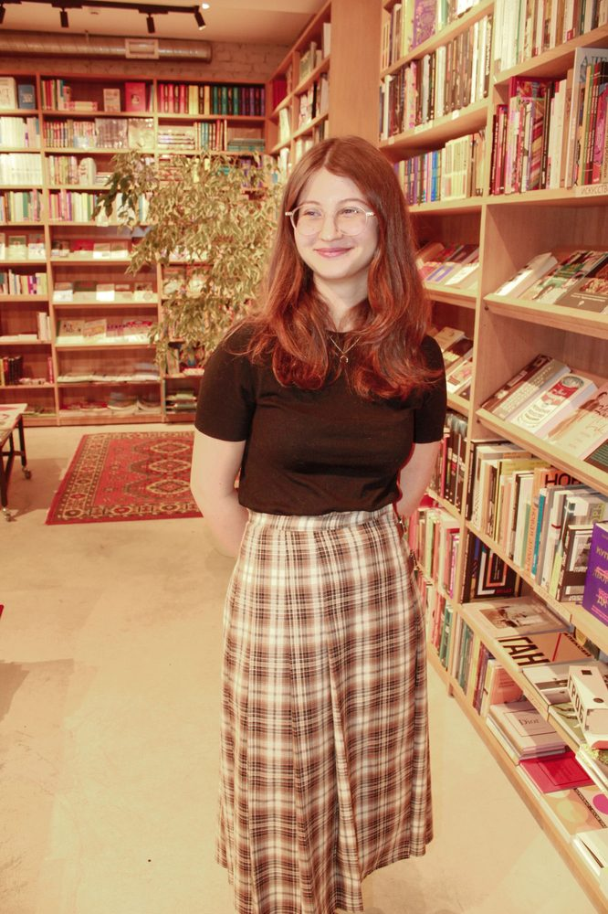
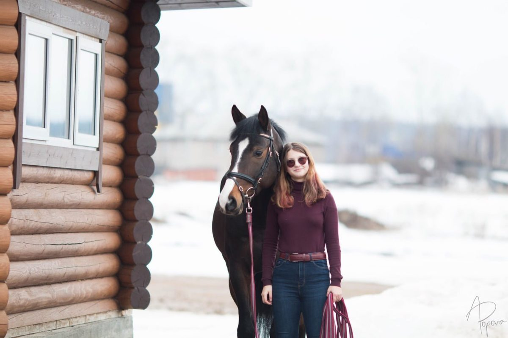
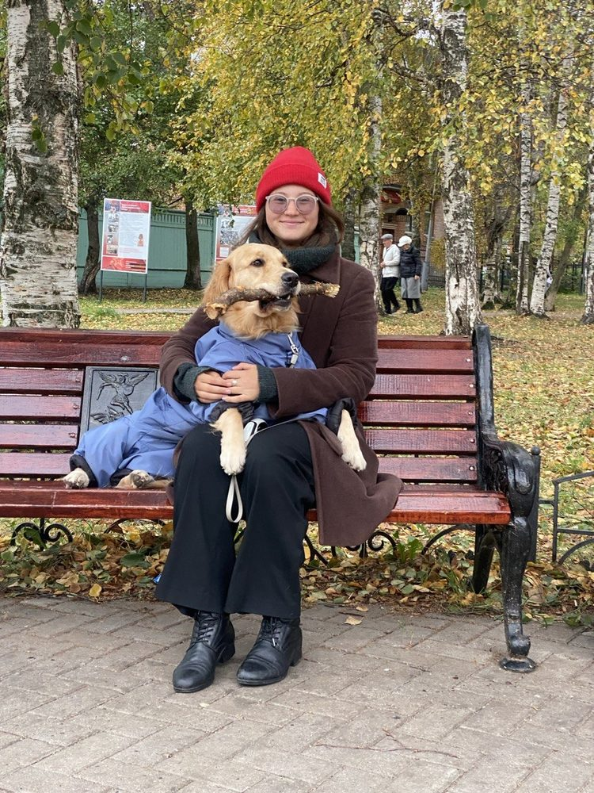
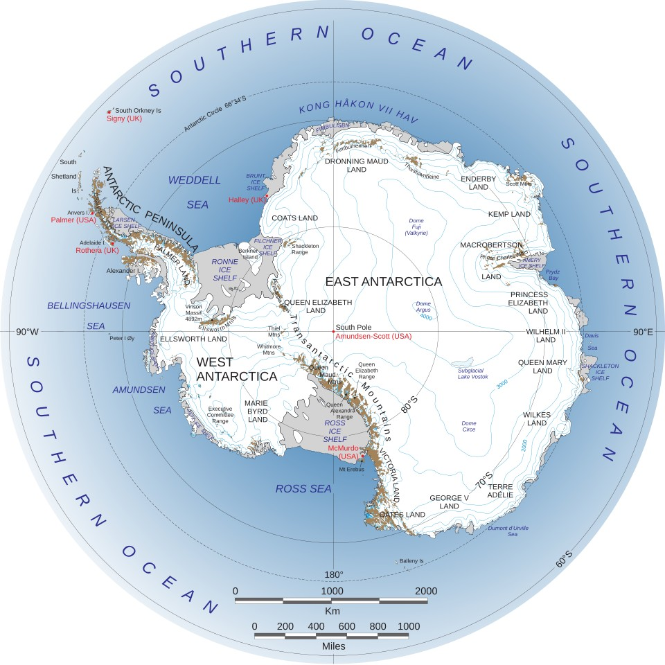

ХоббиHobbies
Interests

ЧтениеReading
Любимый способ отдыха вне поля и лаборатории. A favourite way to unwind outside fieldwork and the lab.

Конный спортHorse Riding
Многократная чемпионка региональных соревнований по конному спорту, второй взрослый спортивный разряд. Multiple-time regional equestrian champion, Category II adult ranking in the Russian equestrian classification.
II разрядCategory
СобакиDogs
Любовь к собакам: в свободное время занимается их дрессировкой — от послушания до контакта с хендлером. A love of dogs: trains them in her free time, from basic obedience to building handler rapport.

ПутешествияTravel
Новые маршруты, культуры и экспедиционные направления. В списке мечты – Кейптаун и Антарктида. New routes, cultures, and expedition destinations. Cape Town and Antarctica top the wish list.